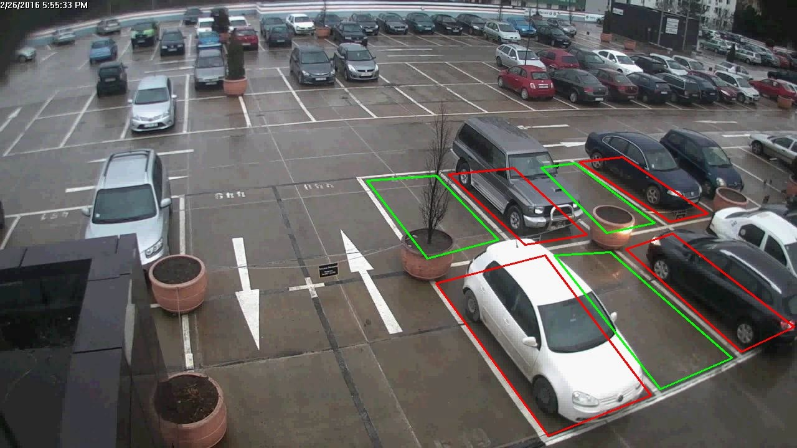
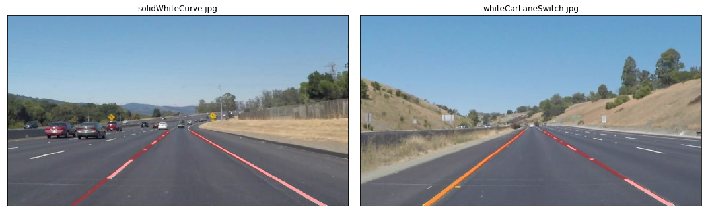

Ideas for Diploma Projects
Updated on 10.04.2024 (for 2025)
Overview
Below is a list of possible topics. These topics can be modified and adjusted at will. Any other similar topic is possible, after a discussion with me.
- Applications in signal processing: image / video / audio / etc.
- Embedded devices for acquisition of signals
- Any topic that the student is interested in, in the domain of signal processing. Talk to me about it first.
Requirements for students
Students should have:
- abilities and interest in programming: Matlab / Python / any other language
- general knowledge in Digital Signal Processing and related domain
Topics
General Machine Learning algorithms
Outlier detection in network data using Python
Use algorithms for anomaly detection from the Python PyOD library to detect attacks from network traffic
(e.g. detect network attacks, which are different from normal traffic data)
Reference:
- https://pyod.readthedocs.io/en/latest/
- also see the tutorials / examples there
Dataset:
- https://research.unsw.edu.au/projects/unsw-nb15-dataset
Failure detection in industrial systems
Use algorithms for anomaly detection from the Python PyOD library to detect failures in
industrial devices, like ball bearings, based on accelerometer data.
Reference:
- https://www.mdpi.com/2227-9709/8/4/85
- https://pyod.readthedocs.io/en/latest/
Other algorithms
Any other ideas or applications of Machine Learning algorithms from the PyOD and scikit-learn Python libraries are welcome.
- PyOD: https://pyod.readthedocs.io/en/latest/
- Scikit-learn: https://scikit-learn.org/stable/
AI and neural networks
Parking Spotter
Use object detection methods for detecting cars and free parking spots in a large parking area. Implement it live on a Raspberry PI or equivalent.
Example:
- https://www.parking-spotter.com/

Car Distance Estimator
Use object detection methods for detecting the car in front of you and, based on the size of the car, estimate the distance to it. Implement it live on a Raspberry PI or equivalent.

People Counter
Implement an application to detect and count people from images/videos and report long-term statistics
Image/video processing
Lane detection
Use image processing algorithms to detect the lanes from a traffic video and understand:
- which lane we are currently on
- is there a curve next, or is the road straight
Implement it live on a Raspberry PI or equivalent.
Example:
- https://medium.com/computer-car/udacity-self-driving-car-nanodegree-project-1-finding-lane-lines-9cd6a846c58c

Image inpainting using sparse representations
Image inpainting means „filling” some missing pixels or parts of an image. Implement one of the various methods for this, namely the one based on sparse decompositions of images in the frequency domain.
References:
- https://github.com/ily-R/Image-Inpainting-via-Sparse-Representation
Image classification with SVM (or other) algorithms
Implement and evaluate an algorithm for image classification, aiming to detect if a person is or is not wearing a mask.
References:
- https://ieeexplore.ieee.org/document/9301079
Methods for image denoising
Implement and compare a number of methods for reducing the noise in general images or other types of data (based on filtering, different transforms, spline smoothing etc).
Examples:
- http://www.mickaeltits.be/open-image-restoration/
Object tracking methods in videos
Implement and evaluate one method of video object tracking. End goal: track cars in a traffic video.
References:
- https://manivannan-ai.medium.com/multiple-object-tracking-algorithms-a01973272e52-
General signal processing with embedded devices
System for acquiring and processing ECG signals
Develop a system for acquiring and analyzing a person's ECG signal, based on an ECG sensor integrated with a Raspberry PI device.
References:
- https://www.optimusdigital.ro/en/others/4411-sensor-module-puls-sparkfun-ad8232.html
- https://www.instructables.com/id/Portable-ECG-Machine/
- https://www.researchgate.net/publication/317368775_A_Portable_Real_Time_ECG_Device_for_Arrhythmia_Detection_Using_Raspberry_Pi